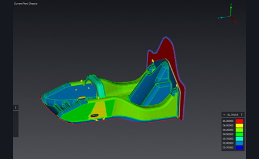

Prometheus Eco Racing / PYRFOROS IV subsystem · NTUA
Monocoque & Composites.
The bodywork is the chassis — a foam-core CFRP sandwich that replaced the previous car's steel spaceframe and its non-structural fairing outright. The laminate was designed region by region against the load state at each location, from material properties derived rather than looked up.

FIG. 01 — RVE micromechanical model — where the laminate properties come from
Why the last car needed a heavy laminate
PYRFOROS III carried two compounding problems, and only one of them was a composites problem. It ran with no suspension at all, so vertical impact loads at the chassis mounting points exceeded 4.5 g — which forced an over-engineered layup simply to keep the shell from delaminating. And its bodywork carried no structural load, so the steel spaceframe underneath had to be sized independently for every load case. Structure and aerodynamic surface were two separate objects, and neither could be optimised without penalising the other.
That is the honest reading of the 2.1 mm average thickness this shell runs at: it is downstream of the suspension, not of a cleverer laminate. Once road-shock energy is filtered before it reaches the mounts, peak transmitted chassis load drops by a reported 65% and the laminate no longer has to be sized for the impact loads the last car took straight through its mounts. Consolidating the structural load paths into the composite shell then removed the redundant frame mass outright.
Both changes were made in the same programme, and together they are what took the structural mass out. The generational mass comparison lives on the PYRFOROS IV case study.

Derived properties, not datasheet properties
A composite datasheet describes somebody else's laminate: their fabric, their resin, their cure, their fibre volume fraction. Using those numbers to size a structure means the safety margin is partly covering the difference between their process and yours, and you cannot see how much of it is doing that.
So the orthotropic properties for this shell were homogenised from a micro-mechanical representative volume element built around the team's own epoxy system — the same method the thesis wheel programme used, carried into a second vehicle on a different team. FIG. 01 is that model. What comes out of it is a material card describing the system that will actually be infused rather than somebody else’s laminate. It is a modelled property set, not a measured one.
Ply count and orientation then follow the FEA-driven load state at each location rather than being applied uniformly, and the sandwich construction carries bending through section depth instead of ply count — which is what keeps virgin carbon volume down. The laminate is a foam-core sandwich because that is the cheapest way, in mass, to buy the second moment of area.
The regional ply schedule
The shell is not one laminate. It is four, assigned by region, and the differences between them are where the mass argument is actually won: a ply added where the load is, a core dropped where a fastener goes through, an aluminium layer only where a suspension clevis bolts on.
Across all four regions the shell consumes roughly 12.9 m² of 2×2 twill and 9.6 m² of biaxial fabric. The subsystem is configuration-controlled as 14 part numbers at 21.93 kg — mechanical and structural only; battery, power electronics and harness are tracked separately.
Which of these stacks got built was not an opinion. It came out of a 19-candidate layup sweep, scored on mass, displacement and failure index, with every losing candidate published — that sweep is on the PYRFOROS IV case study as a rotatable 3D scatter with a data table beneath it.
- Main structure — twill / biaxial / [extra twill at handles and reinforcements] / 3 mm Soric core / biaxial / twill. Core omitted in the reinforcement zones; a 6061 aluminium layer only where the suspension attaches.
- Brace — twill / biaxial / 3 mm Soric / biaxial / twill.
- Front — twill / biaxial / biaxial / twill, coreless.
- Bulkhead — twill / biaxial / twill / 10 mm M80 Corecell / twill / biaxial / twill.
What it was checked against
Five load scenarios were run in EPILYSIS and failure-checked in META against the Tsai–Wu criterion, non-linear: static at 1.0 g vertical, cornering at 0.6 g lateral, acceleration at 0.3 g longitudinal, braking at 0.8 g longitudinal, and bump impact at 2.5–3.0 g vertical. The minimum reserve factor came back at or above 1.0 across every case, on every primary carbon layer.
Two things about that are worth stating plainly. Bump governs — it produces the worst failure index and the worst displacement in every one of the 19 layup candidates, so it is the case that sized this laminate. And the whole validation is simulation: no physical structural test of the monocoque was run, and the report documents none. The wheel programme is where a part of mine went onto a bench and got measured; the shell did not.
Every CFRP-to-aluminium interface — clevises, mounting brackets — carries a laminated glass-fibre isolation layer against galvanic corrosion over the vehicle's service life, with joint loading validated to a safety factor of 3 under the per-lap load spectrum from the vehicle dynamics model. The shell is produced by controlled vacuum infusion rather than hand wet layup, which meters resin through the dry stack instead of leaving the ratio to whoever is holding the roller.
- Static — 1.0 g vertical
- Cornering — 0.6 g lateral
- Acceleration — 0.3 g longitudinal
- Braking — 0.8 g longitudinal
- Bump impact — 2.5–3.0 g vertical (governing)